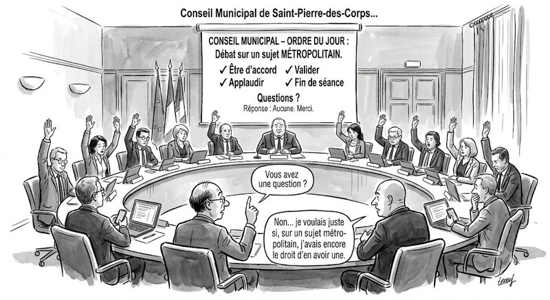

À condition de ne pas oublier la seconde partie, celle qu’on ne prononce jamais :« …mais uniquement si vous êtes d’accord. »
Bienvenue dans la démocratie PowerPoint.
Ici, les décisions sont déjà prises, mais on vous consulte pour choisir la police de caractères.
Le conflit est devenu inconvenant.
Le désaccord est une maladresse, sauf sur des sujets insignifiants
La contradiction est priée de prendre rendez-vous.Et surtout… qu’elle n’oublie pas de prévenir.
Parce qu’à Saint-Pierre-des-Corps, comme ailleurs, une drôle d’idée s’est installée.
L’idée qu’une organisation forte serait une organisation où personne ne hausse le ton.
Quelle erreur.
Les cimetières aussi sont très calmes. Le calme n’est pas un projet politique.
C’est parfois juste l’absence de vie.
-
Untel nous rappelait que le pouvoir est d’autant plus efficace qu’il n’a plus besoin de se montrer.
-
Tel autre ajoutait que la meilleure discipline est celle qui finit par s’exercer toute seule.
-
Autrement dit… Le sommet du pouvoir, c’est quand les gens s’autocensurent avant même qu’on ait besoin de les censurer.
La peur est le seul chef qui n’a jamais besoin de lever la voix.
On appelle cela le sens des responsabilités. Moi, j’appelle cela une victoire du conformisme.
Parce qu’à force de vouloir protéger le collectif, on finit parfois par protéger ceux qui parlent à sa place.
On ne fabrique plus des militants. On fabrique des filtres à café.
Ils laissent passer le liquide. Jamais le marc.
On nous explique que les désaccords affaiblissent. C’est faux.
Ce qui affaiblit une organisation, ce n’est pas le conflit. C’est l’impossibilité du conflit.
Une rivière qui ne déborde jamais finit souvent en marécage.
Une collectivité qui ne débat plus au fonds finit toujours en appareil. Et une telle organisation a ceci de particulier : Elle fonctionne très bien… jusqu’au jour où plus personne ne sait pourquoi elle fonctionne.
-
Certains parlaient d’hégémonie.
-
D’autres parlaient de spectacle.
Aujourd’hui, nous avons inventé une troisième voie : La réunion où tout le monde acquiesce.
Le consensus sur les sujets métropolitians est devenu une religion.
-
Ses prêtres parlent d’unité.
-
Ses fidèles pratiquent le silence.
-
Et ses miracles consistent à transformer les désaccords en problèmes de comportement.
Quand une idée dérange plus que l’injustice qu’elle dénonce, ce n’est pas l’idée qui pose problème.
-
Orwell craignait qu’on interdise les livres. Nous avons trouvé plus élégant. Nous les remplaçons par des éléments de langage.
-
Aimé Césaire écrivait que la colonisation décivilise. On pourrait dire aujourd’hui qu’une organisation qui ne supporte plus la contradiction finit par décourager l’intelligence.
Parce que penser…
C’est précisément prendre le risque de ne pas être d’accord.
Le progrès naît du conflit.
-
Des grèves.
-
Des syndicats.
-
Des ouvriers.
-
Des femmes.
-
Des étrangers.
-
Des invisibles.
Personne n’a obtenu un droit en demandant poliment s’il était possible de déranger cinq minutes.
Les congés payés n’ont pas été négociés entre la poire et le dessert.
Les grandes conquêtes sociales n’ont jamais commencé par : « Je ne voudrais froisser personne… »
Alors pourquoi cette peur permanente de la contradiction ? Pourquoi cette obsession de l’unanimité ?
Parce que l’unanimité est confortable. Elle évite de penser. Elle dispense d’argumenter.
Elle transforme les convictions en procédure. Et les procédures ne perdent jamais un débat.
Elles empêchent simplement qu’il ait lieu.
Alors, je voudrais terminer par une évidence.
-
Une démocratie locale n’est pas une chorale.
-
Un Conseil Municipal, comme un Conseil Métropolitain n’est pas une caserne.
-
Obtenir une majorité n’est pas une religion.
-
Et un collectif qui ne tolère plus le désaccord finit toujours par confondre la fidélité avec l’obéissance.
La politique n’a jamais consisté à éviter les conflits. Elle consiste à choisir quels conflits méritent d’être menés.
Parce qu’au fond…
-
Le contraire du conflit, ce n’est pas la paix.
-
Le contraire du conflit… C’est la résignation.
Et la résignation est la seule victoire que les puissants obtiennent sans avoir besoin de convaincre.
« Alors, cessons de demander aux militants d’être sages. Demandons plutôt aux idées d’être courageuses.
Le reste…
Ce n’est pas de la politique. C’est du mobilier. »
Saint-Pierre-des-Corps le 16 juillet 2026
Abd-El-Kader AIT-MOHAMED, Locataire de la Tour de la Galboisière et « Fier de l’être »., Président de l’Association VESEMT
Commentaires